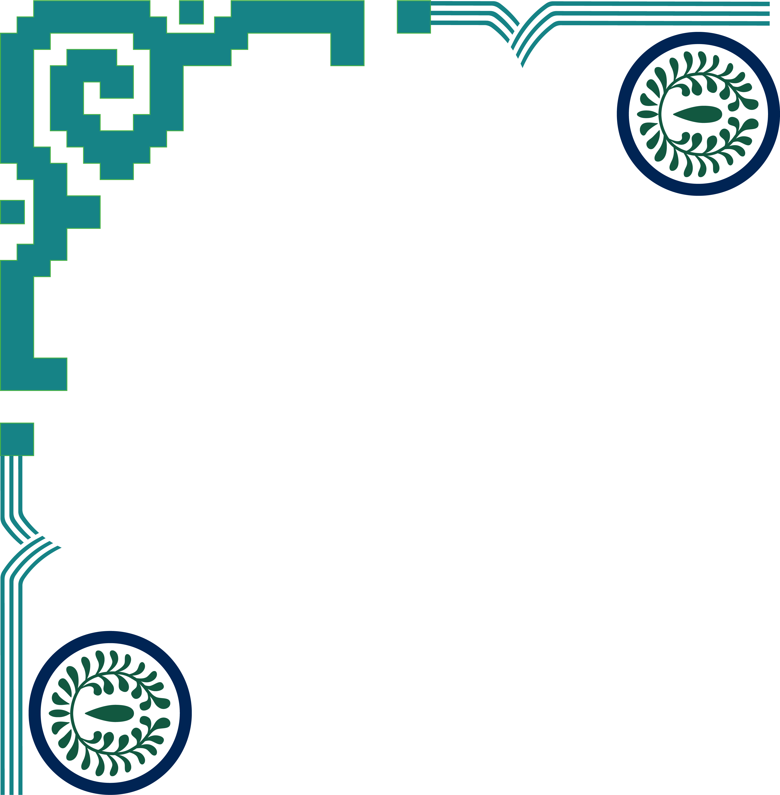
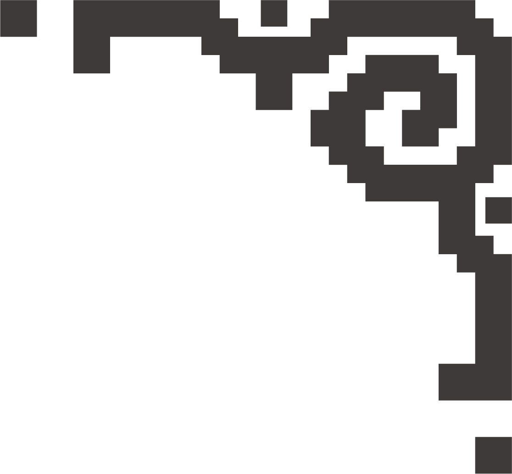
✦ ✦

✦ ✦B站视频 | 播客 | 自媒体思考
工具网址 | 阅读笔记 | 友情链接
机器人感知/学习 | 优质自媒体内容深度思索
每月1-2次 | 资源推荐与个人思考

武汉大学测绘科学硕士（2024-2027）
中国矿业大学测绘本科（2020-2024）
视觉-语言导航 | 3D重建
多传感器融合定位 | 端到端自主学习
武汉大学优秀硕士生 | IEEE JSEN 一作论文
华为杯数模国二 | 美赛M
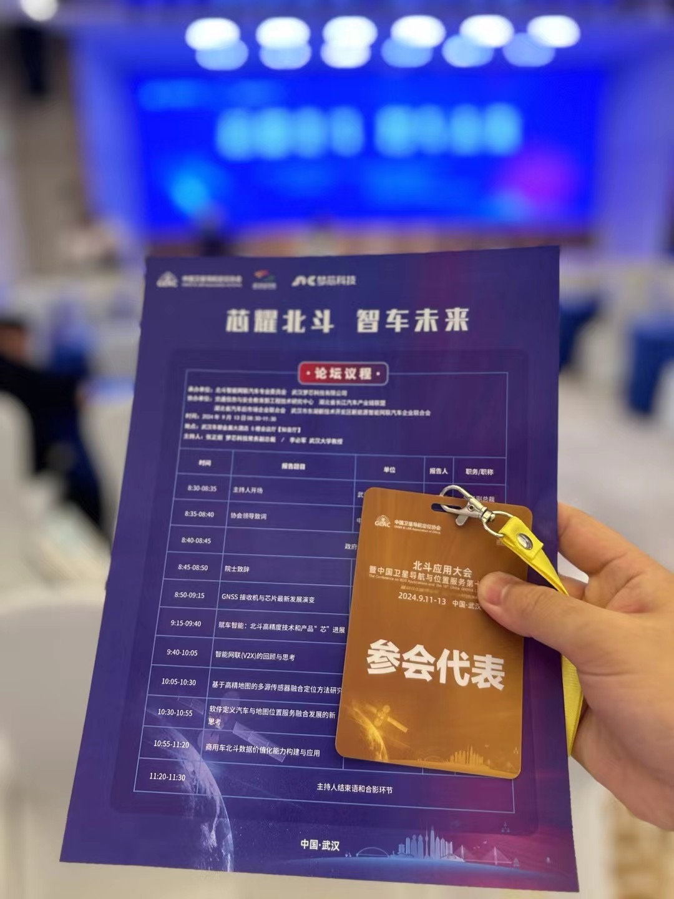
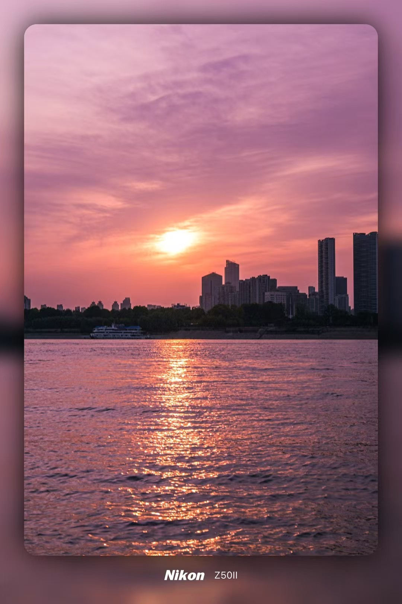
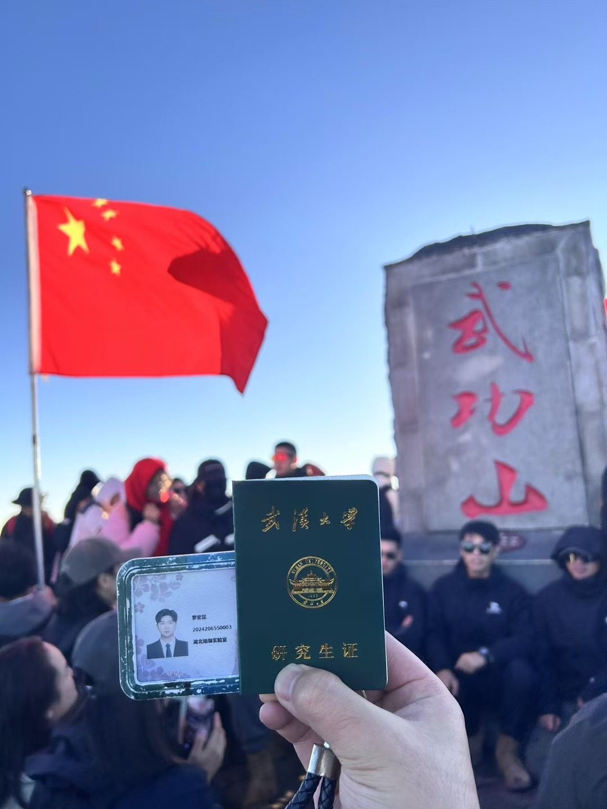
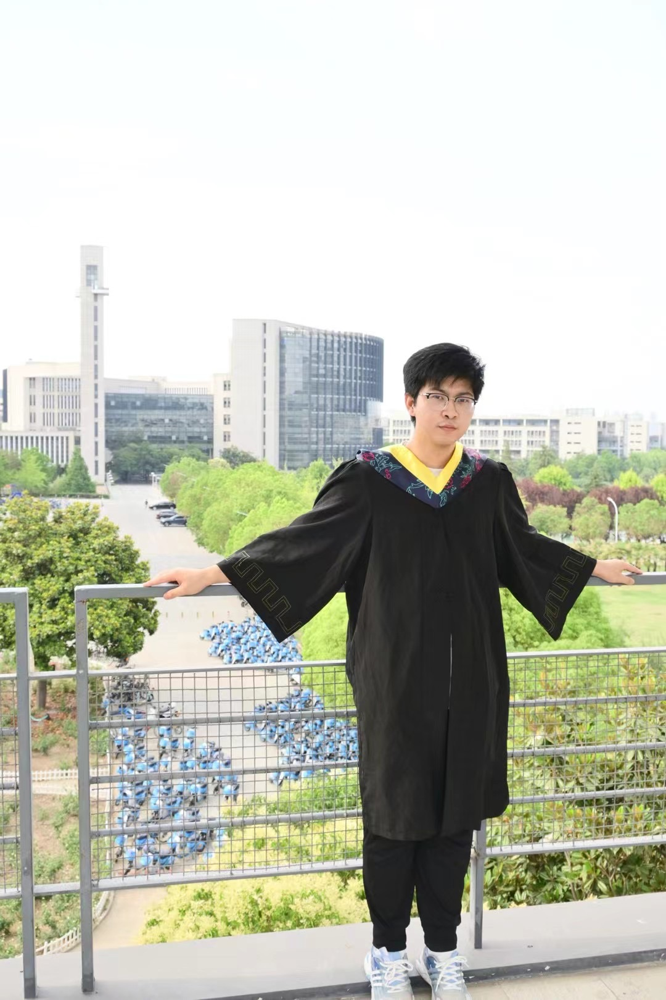
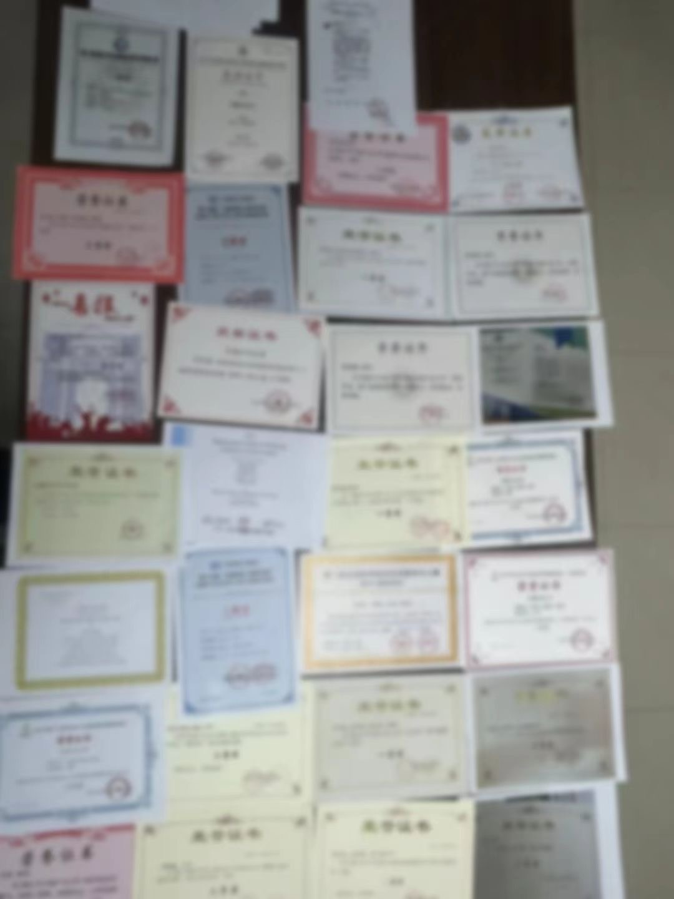
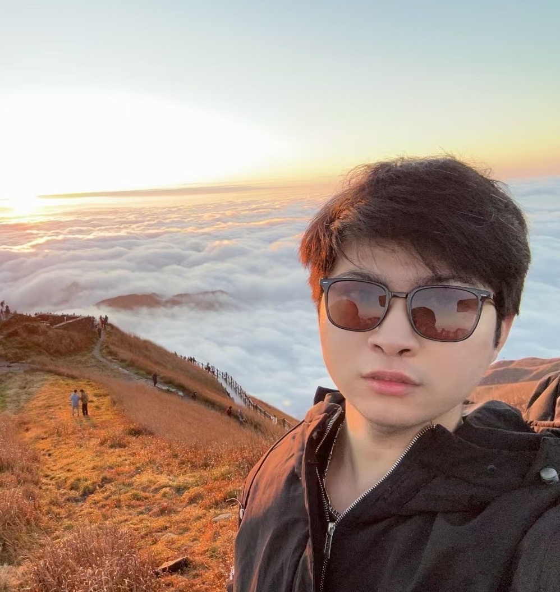
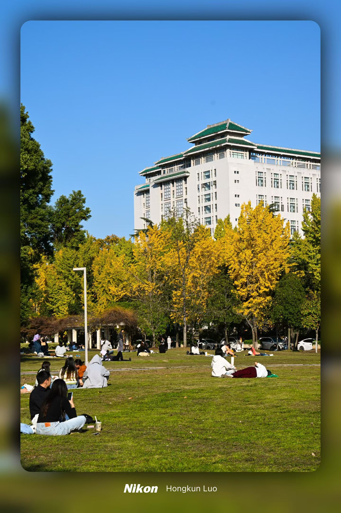
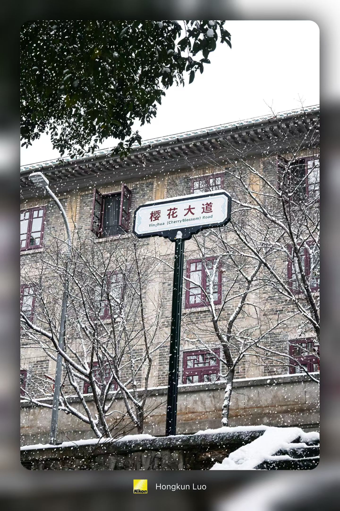
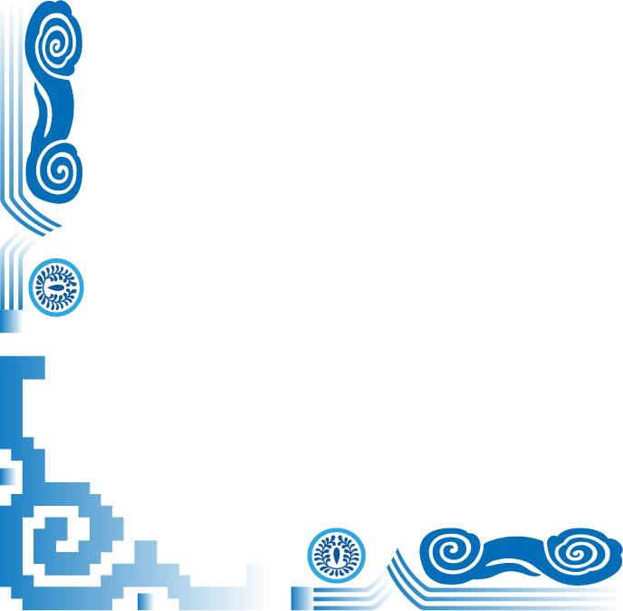
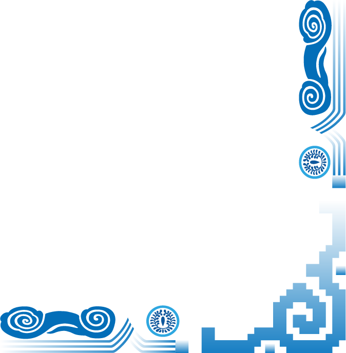